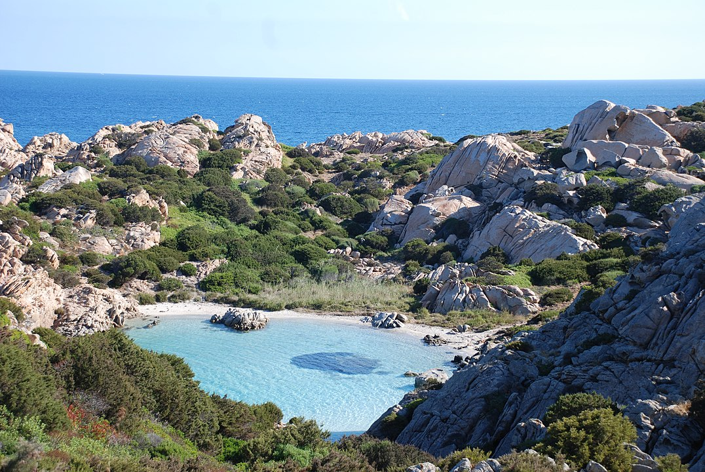
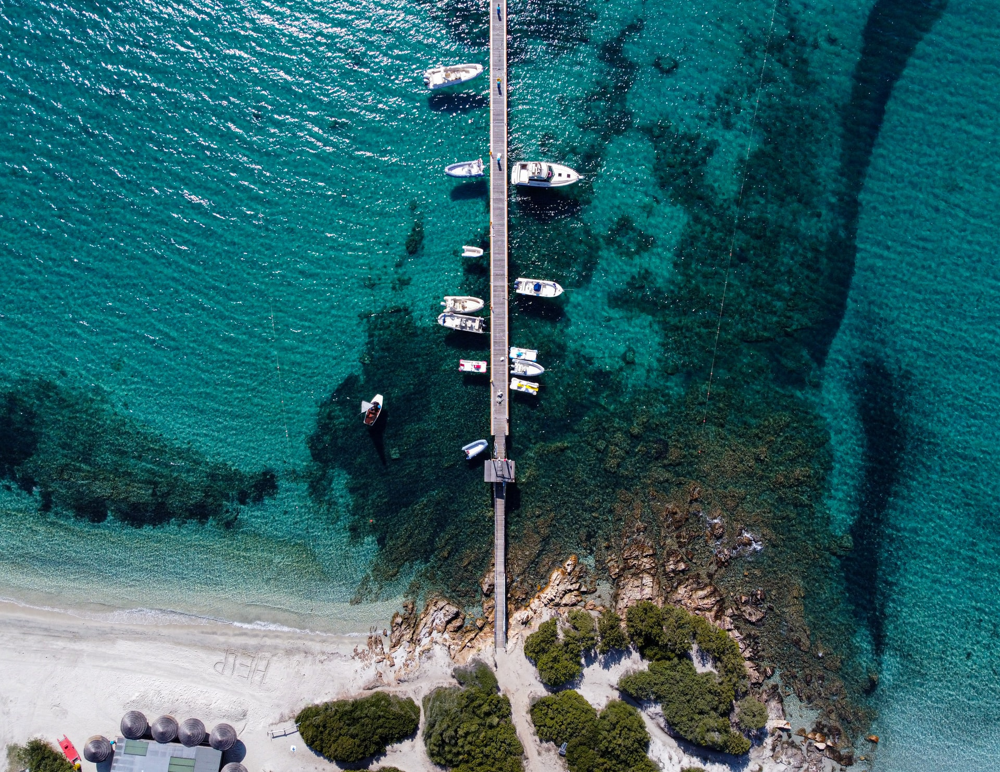
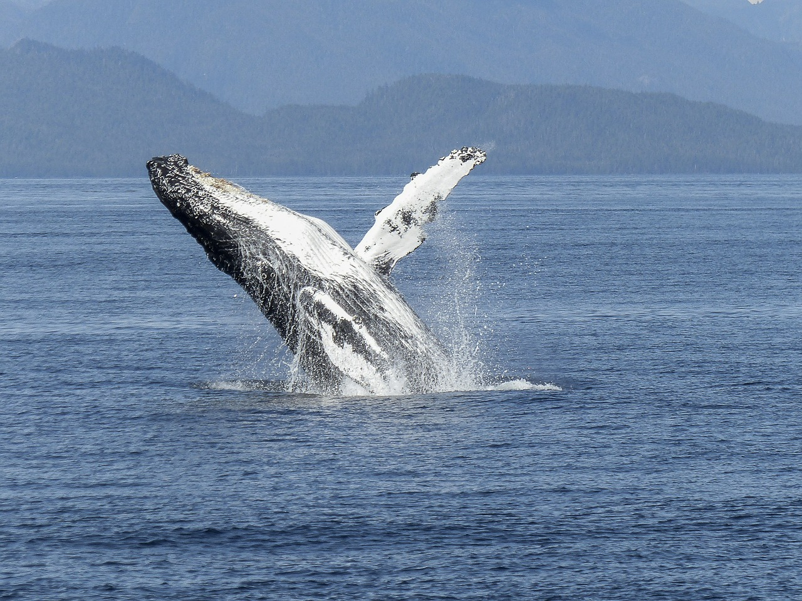

Caprera Island
Archipelago
Stunning little island part of the Maddalena National Park
popular tourist destination.

Costa Smeralda
Archipelago
Popular toursit destination with a wonderful seaside
Book in one of the many luxurious
resorts in the area

Whale Watching
Bonifacio Strait
Placed in the middle of the migratory route of the whales,
you can find tours to admire
these
magnificient creatures